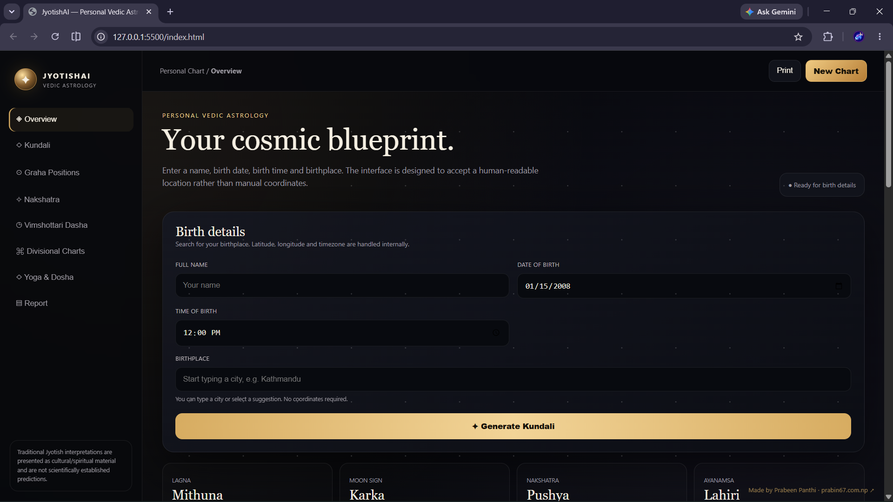

SCHOOL
01
Bagiswori Higher Secondary School
Chyamashing, Bhaktapur, Nepal
My school education and early academic foundation.
I'm Prabin Panthi, an IT student and developer from Kathmandu, Nepal. I build websites, browser experiences, small Python projects and games while learning by creating.
const developer = {
name: "Prabin Panthi",
location: "Nepal",
education: "BSc IT",
learning: [
"JavaScript", "Python",
"Roblox Development"
],
mindset: "keep building"
};I'm a technology-focused student who enjoys turning ideas into functional and visually polished digital experiences.
I studied Management with Computer Science at NCCS Secondary School and am now pursuing a BSc in Information Technology at Techspire.
My current interests include web development, JavaScript, Python mini-projects, UI design, browser games and beginner Roblox game development.
From school fundamentals to an IT-focused degree.
01
Chyamashing, Bhaktapur, Nepal
My school education and early academic foundation.
02
Paknajol, Kathmandu, Nepal
Management stream with Computer Science as a major, developing foundations in programming, databases and computer science.
03
Baneshwor, Kathmandu, Nepal
BSc in Information Technology. Currently building deeper knowledge across programming, software, web technologies and the wider IT field.
Real projects, experiments and ideas in progress.

01 / WEB APPA polished astrology interface concept featuring Kundali, planetary positions, Nakshatra, Dasha, divisional charts and report-oriented UI.
View GitHub Repository ↗A browser game focused on interaction, scoring, animation and a clean game interface. Watch the gameplay overview above.
View GitHub Repository ↗A browser-based 2048 experiment with undo, saved high scores, AI play and responsive design.
Small Python programs and experiments built to strengthen programming logic, problem solving and automation fundamentals.
Beginner game-development experiments exploring Roblox Studio, gameplay systems, level design and interactive mechanics.
A visual concept for a technology platform covering phones, laptops, cameras, prices and tech discovery.
A growing toolkit. I'm comfortable building with web fundamentals and continuously expanding into Python and game development.
For projects, collaboration, questions or just connecting with another developer.